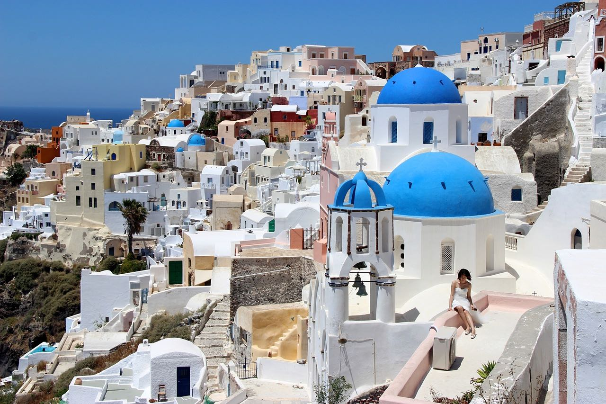
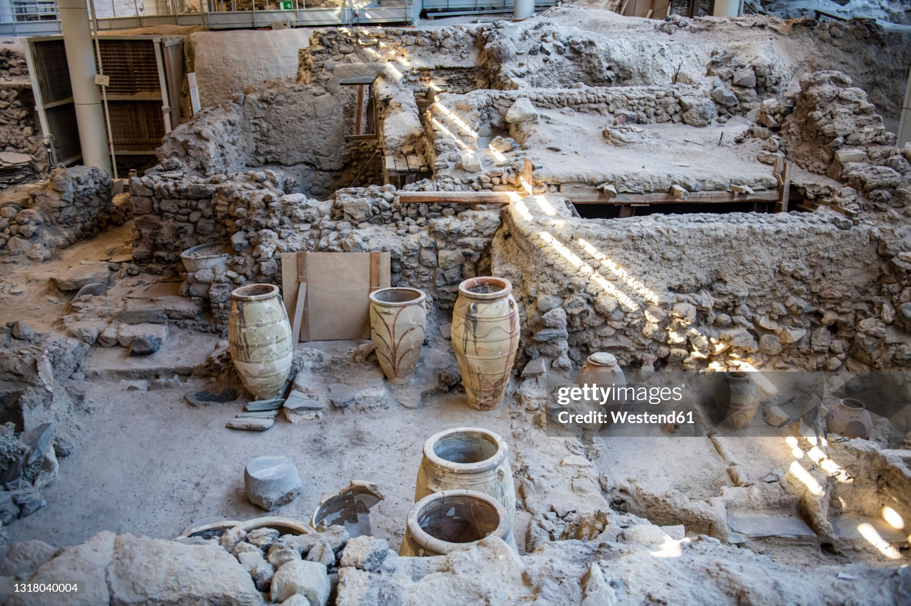
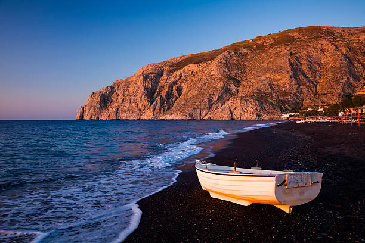
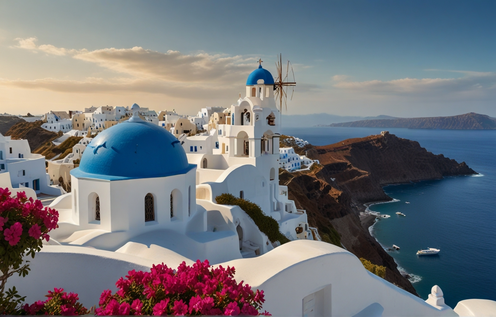
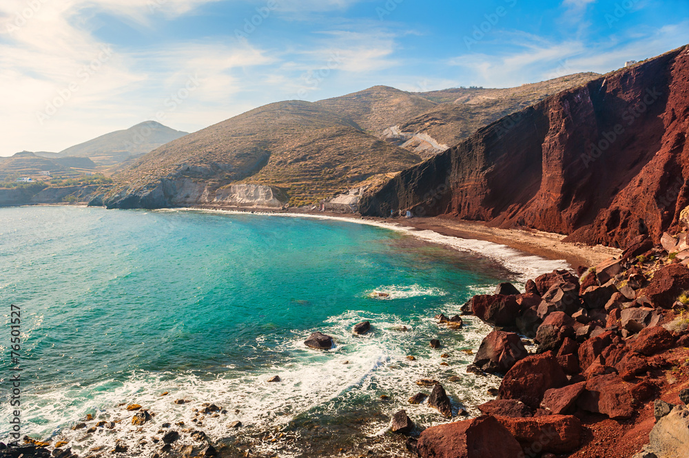

Santorini, una de las islas más hermosas de Grecia, es famosa por sus impresionantes atardeceres, sus edificaciones blancas con techos azules y sus paisajes únicos formados por la caldera volcánica.
Esta isla es un destino perfecto para los amantes de la naturaleza, la historia y la gastronomía.
¿Qué Visitar?
Oia: Conocido por sus atardeceres espectaculares, Oia es un pueblo pintoresco con vistas panorámicas del mar Egeo.
No te pierdas la Plaza de la Fuente y la Iglesia de Agios Spiridon.
Akrotiri: Un sitio arqueológico que ofrece una visión fascinante de la civilización minoica. Es similar a la Pompeya griega y está bien conservado.

Kamari Beach: Una playa de arena negra famosa por su ambiente relajado y sus aguas cristalinas.
Fira: La capital de la isla, donde puedes encontrar tiendas, restaurantes y la impresionante Catedral de Agios Minas.

Red Beach: Conocido por su arena roja y sus formaciones volcánicas únicas, es un lugar perfecto para los amantes del senderismo.
